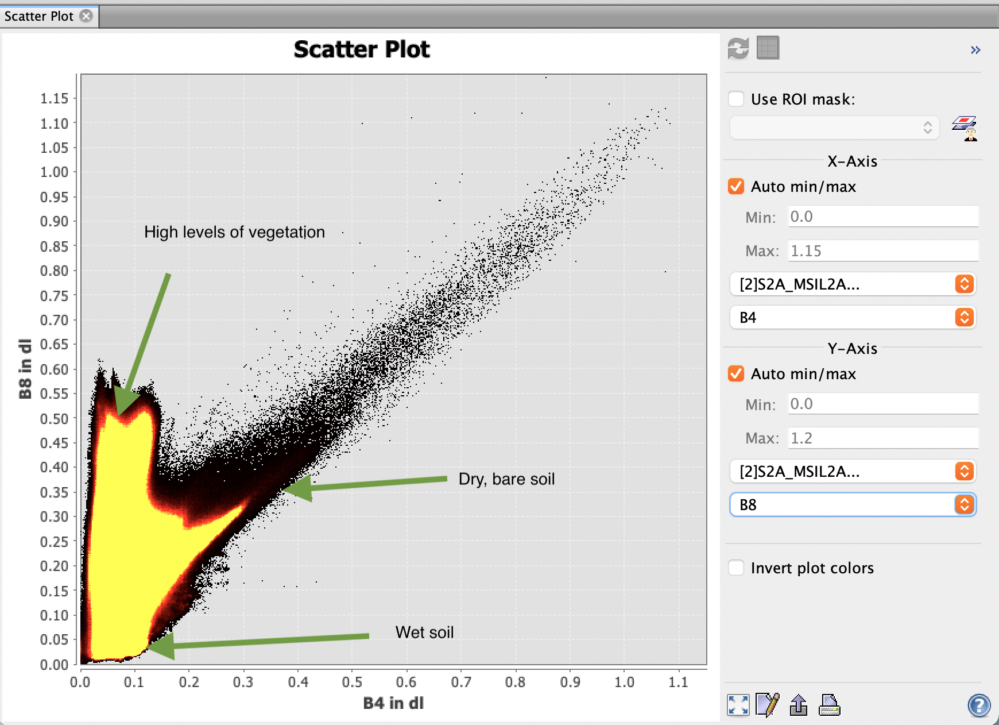
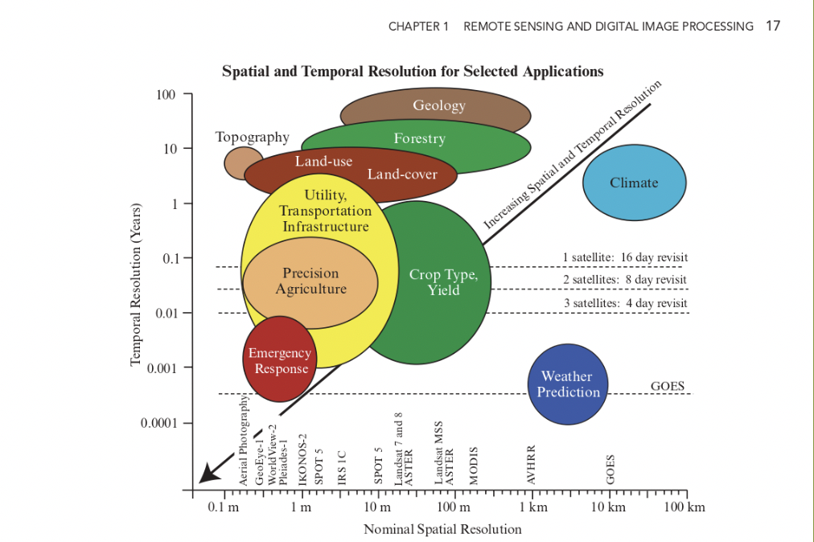
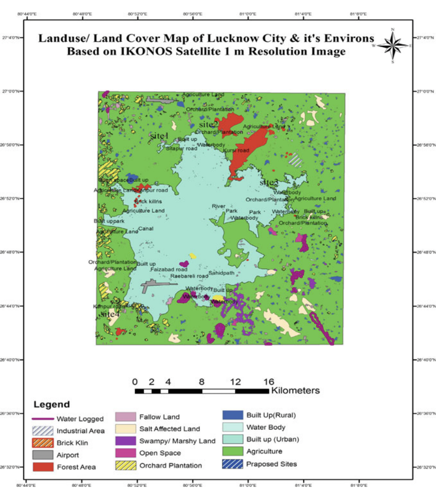

1 Introduction
1.1 Summary
1.1.1 Lecture Overview: What is Remote Sensing?
1.1.2 Electromagnetic Spectrum
The electromagnetic spectrum is made up of thousands of bands, including visible light, UV, infrared, radar, FM, TV and short wave.

- The earth’s surface either absorbs energy or transmits energy.
- The colour we see is the visible light waves that is reflected off of the object. Apple is red because it reflects red and absorbs all other visible light.
1.1.3 Resolutions of remote sensing images
Spatial: The size of a raster grid per pixel (cm/m). The smaller the measure, the more detailed the image.
Spectral: The number of bands from the electromagnetic spectrum being surveyed. Often earth surfaces require multispectral data to form a true colour image.
- i.e. green vegetation mostly requires red and near-infrared bands to detect, whereas soil requires mid-infrared bands (6 and 7) to be detected; bodies of water can be detected mostly within visible light (RBGs).
- Landsat data surveys visible light, near infrared and short wave infrared.
An example from the practical: The below scatter image was produced from sentinel data of Dhakar, Bangladesh. Band 4 = Red Band 8 = NIR * High NIR and Low Red - high vegetation since veg peaks in NIR (see above) * Low red Low NIR - Wet soil.

Temporal: How frequently the data is collected. Often there is a direct trade-off between pixel resolution and update frequency – the higher the resolution, the lower the update frequency. Good rm data is spenny!!
Radiometric: Able to identify difference in light or reflectance of Earth surface.
- The higher the bit, the higher the depth, the higher the ability to detect texture.
Data format: Generally raster, but depending on sensor.
- LiDAR is point data in x, y and z (height) → good for elevation models.

A bit of thinking: Applications of varying temporal and spatial resolution, what occasion it’s best for and what satellite provides that spatial resolution. An interesting point is RM data for emergency responses require fairly granular spatial resolution and frequent temporal resolution – so as to track minute changes in landscapes. However as mentioned above, there are direct trade offs between temporal and pixel resolution. For satellites to provide both high temporal and spatial resolution requires huge sums of cost and investment. With growing threats from the climate crisis on the urban landscape – do we currently have the capacity to effectively monitor damages and respond on time?
1.1.4 Factors influencing Electromagnetic waves
Rayleigh Scattering: Scattering of waves off of molecules in the air (the atmosphere).
- Blue waves are smaller, making it easier to scatter → sky = blue.
- Higher the scatter/absorption, deeper the colour. Deep ocean is dark because there are more water molecules to scatter and absorb waves → no reflection.
Bidirectional Reflectance Distribution Function (BRDF):
- changing angles of sensors and levels of illumination
- earth surface that is smooth/diffuse that causes reflectance to go in different directions.
- Shadows: Backscattering - sun behind observer | forward scattering - sun opposite observer.
Polarization (SAR data):
- EMR waves with 2 waves oscillating perpendicularly. How they reflect depends on texture of the earth surface, moisture, salinity, density, orientation.
- Single: same polarization transmitted and received
- Dual: transmit one, get another
- Quad: transmit and receive up to 4 types.
1.1.5 Practical: Landsat, Sentinel, QGIS, SNAP
Data Source: Sentinel Data: Copernicus Open Access Hub Landsat Data: Earth Explorer USGS Boundary Data (for masking): https://gadm.org/
Colour compositions: True Colour: colours we see with our eyes B2, B3, B4. False Colour: composite of waves human eyes cannot see. * Infrared: B8, B4, B3. Plants reflect NIR and green light and absorbing red. * Agriculture: B11, B8, B2. Detecting healthy vegetation in dark green * Moisture:(B8A-B11)/(B8A+B11). Detecting water stressed.
1.2 Application
Since the emergence of accessible Landsat Satellite images in 1967, earth data has been used for a wide range of purposes including tracking land use, urbanisation, drought, wildfires, biomass changes and other natural and human caused changes (USGS, nd).
1.2.0.1 Environment
The Intergovernmental Panel on Climate Change stated earth-observing satellites are a critical and valuable tool to track changes and improving climate predictions (“ESA and Climate” (n.d.)). Coupled with substantial environmental changes in recent decades, remote sensing data has allowed changes to be tracked and analysed over the last century. Sultana and Satyanarayana (2020) have used satellite imagery to assess the rate of urbanisation and urban heat island intensities in urban India. Matricardi et al. (2010) analysed the effects of tropical forest degradation as a result of logging and fire, and implemented policy recommendation accordingly, taking advantage of the extensive spectral bands available. Extensive reports by international climate driven bodies have used earth data to measure glacier and sea ice decline, sea level rise and climate modelling.
1.2.0.2 Urban Development
Development of urban areas can be measured with medium to high spatial resolution satellite images including SPOT, Landsat, and Aster, providing a large mass of data on urban growth (Patino and Duque (2013)). Sutton (2003) measured the sprawl of cities using nighttime satellite imagery, using lights as a proxy for urban activities. Elkhrachy (2022) has specifically used SAR data to detect depth of flash flood water in risk zones. “Site Suitability Evaluation for Urban Development Using Remote Sensing, GIS and Analytic Hierarchy Process (AHP) | SpringerLink” (n.d.) used earth data and Analytic Hierarchy Process technique to evaluate site suitability for urban development. They specifically looked for geomorphology, transport network, land use/cover and access to ground water. 1 meter spatial resolution images from from IKONOS data was used.

1.3 Reflection
- Remote sensing data has in a way revolutionised how people approach spatial analysis, providing an unprecedented amount of data about the earth’s surface with lrelatively ow barriers to access compared to previous available methods, such as costal surveying. This has been especially true since remote sensing data became publicly available, democratising access.
- Utilising the varying spectral properties of earth surfaces and objects, our understanding and ability to analyse urban areas has significantly improved, with scientists more easily able to map high density buildings, transport networks and urban vegetation. RM data essentially removes the need to physically surface overviews of urban characteristics (although detailed, high resolution analysis still relies on manual surveying).
- Although powerful, earth data is often used in conjunction with other data, especially demographic, social and economic data for urban analysis to translate into urban policies. For example, satellite imaging can be used to map certain visible characteristics of urban poverty, alongside census data to give a more nuanced picture.
- There is a wide range of analysis that could be done with RM data, including regression analysis, neural network deep learning, principal component analysis and classification. The options are endless!!!!